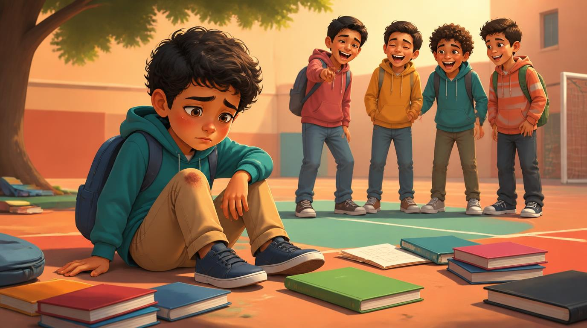

قصة قصيرة عن سامي الذي اختار الرحمة بدل الشماتة.
ماذا نتعلّم من القصة؟ وما الفرق بين الرحمة والشماتة؟
وصّل الكلمات بمعانيها، واختر القرار الصحيح في كل موقف.
لوحة كبيرة من قصة العدد بانتظار ألوانك الجميلة.
معلومة ممتعة عن الرحمة عند البشر والحيوانات.
مساحة لك لتكتب قصتك الخاصة، ونلتقي في العدد القادم.

مرّ شهر على انضمام سامي إلى صفّه الجديد، وأصبح له فيه أصدقاء كثر. أما وائل، الذي كان يسخر منه في الأسابيع الأولى، فقد تغيّر قليلًا بعدما وقف خالد بجانب سامي ذلك اليوم — لكنه بقي متعجرفًا في تعامله مع بعض الزملاء.
في فسحة الظهيرة، كان وائل يركض بسرعة في الساحة وهو يتباهى أمام أصدقائه، فتعثّر بحجر وسقط بقوة على الأرض، وتناثرت كتبه، وظهرت خدوش على يده.
ضحك بعض الطلاب بصوت عالٍ، وقال أحدهم: "أخيرًا! هذا جزاء من كان يسخر من الآخرين." وشعر سامي، للحظة، بأن قلبه يبتسم قليلًا هو أيضًا.
تردّد سامي للحظة، ثم مشى نحو وائل بهدوء، ومدّ له يده ليساعده على النهوض. جمع كتبه المتناثرة، ونفض عنها التراب، وقال: "تعال، لنذهب إلى الممرضة لتنظيف يدك."
ابتسم سامي وقال: "لأن الألم الذي تشعر به الآن حقيقي، ولا علاقة له بما حدث بيننا سابقًا. لو كنت مكانك، كنت سأحب أن يساعدني أحد." ساد صمت قصير، ثم مشى الاثنان معًا نحو غرفة الممرضة.
في طريق العودة إلى الصف، قال وائل بصوت خافت: "شكرًا لك يا سامي... لن أنسى هذا." شعر سامي بفرح هادئ في داخله، أهدأ وأعمق بكثير من فرح الشماتة الذي شعر به قبل قليل.
لو كان سامي قد اختار الضحك مع الآخرين بدل مساعدة وائل، بماذا كان سيشعر بعد ذلك؟
ولو أساء إليك أحدهم يومًا، ثم رأيته يتألم، ماذا كنت لتفعل أنت؟
أن نشعر بألم الآخرين ونسارع لمساعدتهم، حتى لو كانوا قد أخطأوا في حقّنا يومًا. الرحمة ليست ضعفًا، بل قوة قلب تجعلنا نرى الإنسان قبل أن نرى خطأه.
قال رسول الله ﷺ: "الرَّاحِمُونَ يَرْحَمُهُمُ الرَّحْمَنُ، ارْحَمُوا مَنْ فِي الْأَرْضِ يَرْحَمْكُمْ مَنْ فِي السَّمَاءِ." الرحمة تكسر دائرة الانتقام، وتحوّل عدوًّا محتملًا إلى صديق، كما حدث بين سامي ووائل.
الأفيال معروفة برحمتها؛ إذ تساعد أفراد قطيعها المصابين أو المسنّين، وقد شوهدت وهي "تحزن" بجانب أفيال ماتت من قطيعها لساعات طويلة.
من أسماء الله الحسنى "الرحمن" و"الرحيم"، وكل سورة في القرآن الكريم تقريبًا تبدأ بـ"بسم الله الرحمن الرحيم"، تذكيرًا دائمًا بمكانة هذه القيمة.
يقول العلماء إن مساعدة الآخرين تُطلق في الدماغ مادة كيميائية تمنحنا شعورًا بالسعادة أعمق وأطول من شعور الانتصار أو الشماتة.
في المرة القادمة التي تشعر فيها برغبة في الشماتة، عد إلى هنا واكتب ماذا فعلت بدلًا من ذلك: